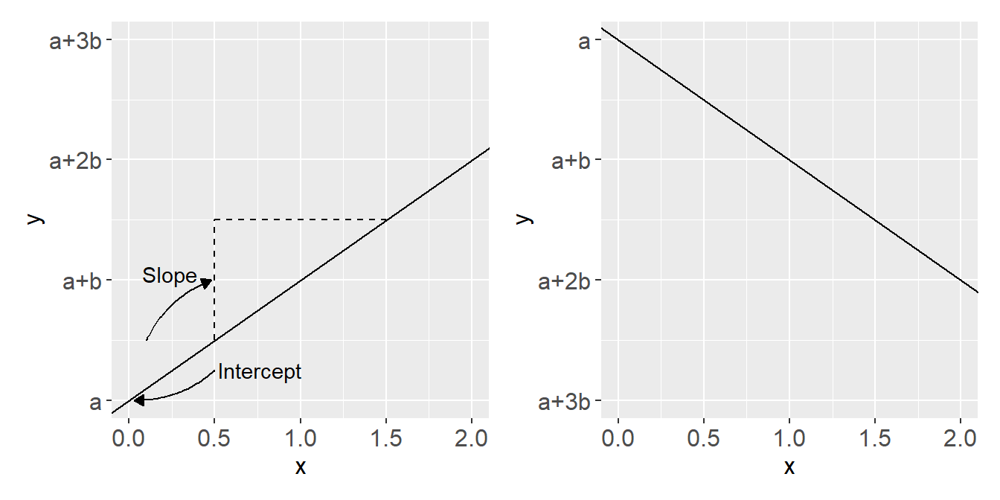
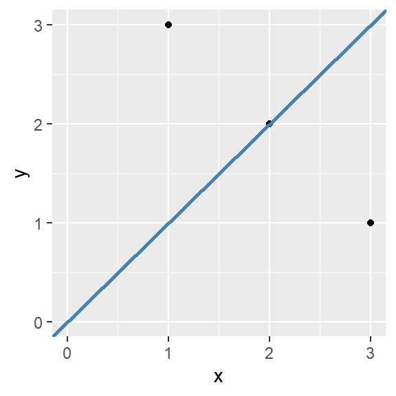
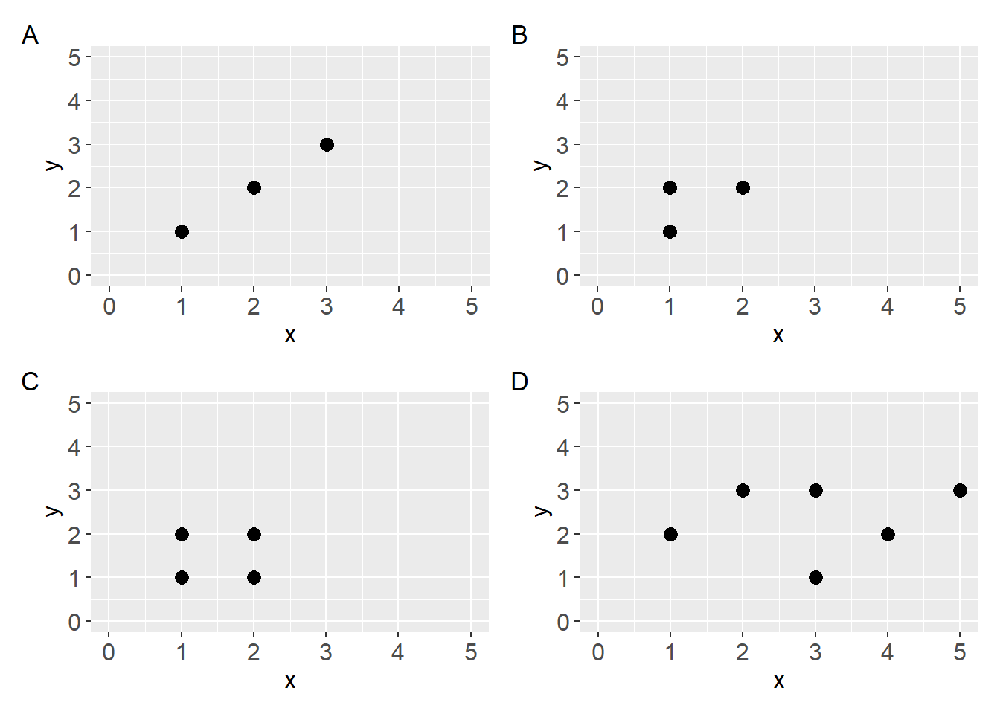
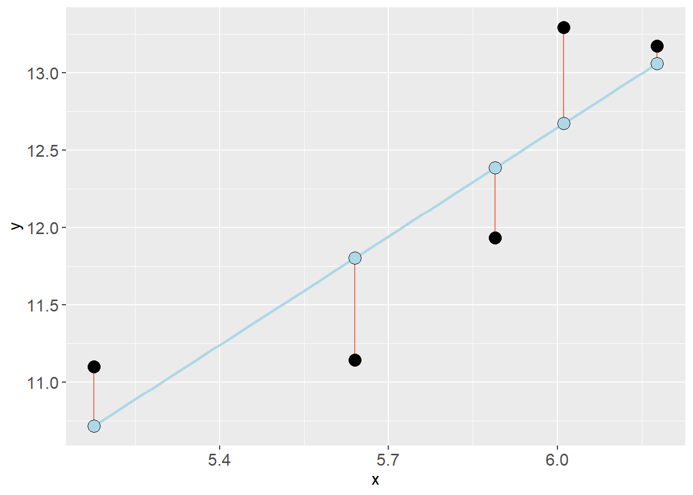

The Linear Model
The equation of a straight line
A straight line can be described using the simple equation \(y = a + bx\). Here \(a\) is the intercept (\(y\) when \(x=0\)) and \(b\) is the slope (difference in \(y\) for every unit difference in \(x\)).
The line is heading upwards if \(b > 0\) and downwards if \(b < 0\).
Creating models of data using straight lines
Notes on models1
- We can use the straight line to create a model that describes data.
- A statistical model is an abstract representation of the underlying data that we hope captures some characteristics of the real world(!).
- The straight line effectively avoids complexity of the real world
- Statistical models are constructions made for some purpose (e.g., prediction or explanation)
We will start our journey in statistical modelling using straight lines.
Group work
Straight lines can be added to a ggplot using the geom_abline() function. It takes the arguments slope and intercept. For example:
Code
ggplot(data = data.frame(x = c(1, 2, 3),
y = c(3, 2, 1)),
aes(x, y)) + geom_point() +
geom_abline(slope = 1, intercept = 0, color = "steelblue", linewidth = 1) +
scale_y_continuous(limits = c(0, 3)) +
scale_x_continuous(limits = c(0, 3))
- What line would best describe the data shown in the plots below? Copy the code in the code chunk below the figure and add straight lines that best describes the data.
- Discuss: What made you decide where to place the lines?

Code
a <- ggplot(data.frame(x = c(1, 2, 3),
y = c(1, 2, 3)),
aes(x, y)) +
geom_point(size = 3) +
scale_y_continuous(limits = c(0, 5)) +
scale_x_continuous(limits = c(0, 5))
b <- ggplot(data.frame(x = c(1, 1, 2),
y = c(1, 2, 2)),
aes(x, y)) +
geom_point(size = 3) +
scale_y_continuous(limits = c(0, 5)) +
scale_x_continuous(limits = c(0, 5))
c <- ggplot(data.frame(x = c(1, 1, 2, 2),
y = c(1, 2, 1, 2)),
aes(x, y)) +
geom_point(size = 3) +
scale_y_continuous(limits = c(0, 5)) +
scale_x_continuous(limits = c(0, 5))
d <- ggplot(data.frame(x = c(1, 2, 3, 3, 4, 5),
y = c(2, 3, 1, 3, 2, 3)),
aes(x, y)) +
geom_point(size = 3) +
scale_y_continuous(limits = c(0, 5)) +
scale_x_continuous(limits = c(0, 5)) Fitting a straight line to data
To achieve the goal of describing data with a model, a straight line can be fitted to data by minimizing the error in \(y\).
For every observation (\(y_i\)) a line produces a prediction \(\hat{y}_i\). The best fitting line is the line that minimizes the sum of squared errors:
\[\sum(y_i - \hat{y}_i)^2\]

By adding the residual error (\(y_i - \hat{y}_i\)) to the equation mentioned above we can formalize the model using the following notation:
\[y_i = \beta_0 + \beta_1x_{i} + \epsilon_i\]
Each observation \(y_i\) can be described with coefficients describing the straight line \(\beta_0 + \beta_1x_i\) and some error \(\epsilon_i\).
Which can be translated to (Spiegelhalter 2019):
\[\text{observation = deterministic model + residual error}\]
Review your understanding
Define these concepts:
- Model
- Coefficients
- Intercept
- Slope
- Residuals
Fitting a regression model in R
Work in pairs and use the code below to fit and analyze a regression model
We will use the cyclingstudy data set to fit regression models. In R, a linear model can be fitted with the lm function. This function needs a formula and a data set (data frame).
A formula is written as y ~ x, this formula can be read as “y explained by x”.
Let’s use the pre time-point data to predict/explain VO2.max with height.T1.
Code
library(exscidata)
data("cyclingstudy")
# Reduce the data set
dat <- cyclingstudy %>%
filter(timepoint == "pre") %>%
select(subject, height.T1, VO2.max)
mod <- lm(VO2.max ~ height.T1, data = dat)The resulting model object is a list that contains a lot of information. We will put some of these components in a figure by first creating a data frame. Copy the code and run it in your own environment!
First, mod$model is a data.frame of the data used to fit the model. mod$fitted.values contains the predicted values from the regression model and mod$residuals contains each residual (\(y_i - \hat{y}_i\)). We can store these together in a new data frame:
Code
mod_dat <- data.frame(mod$model,
fitted = mod$fitted.values,
resid = mod$residuals)We will start by adding the fitted values as a function of the predictor values (height.T1). Let’s make the points a bit larger and filled circles.
Code
mod_dat %>%
ggplot(aes(height.T1, fitted)) + geom_point(size = 3, shape = 21, fill = "steelblue")Next we will add the residuals as segments starting from the fitted values. geom_segment takes the aesthetics (aes) x, xend, y and yend. x and xend will be the predictor values (height.T1), y will be the fitted values and yend will be the fitted values + residuals.
Code
mod_dat %>%
ggplot(aes(height.T1, fitted)) + geom_point(size = 4, shape = 21, fill = "steelblue") +
# Add residuals
geom_segment(aes(x = height.T1, xend = height.T1, y = fitted, yend = fitted + resid))Notice that there are some overlap between individuals in height.
Next, let’s add the observed values in a new geom_point. We make the points a bit bigger and make the filled circles.
Code
mod_dat %>%
ggplot(aes(height.T1, fitted)) + geom_point(size = 4, shape = 21, fill = "steelblue") +
# Add residuals
geom_segment(aes(x = height.T1, xend = height.T1, y = fitted, yend = fitted + resid)) +
# Add observed values
geom_point(aes(height.T1, VO2.max), shape = 21, fill = "hotpink", size = 4)At last, let’s add the model prediction as an annotation. Using annotate we can specify a geom and if we chose "segment" it let’s us specify a start and an end on the x and y axis. We can use the function coef() to get the coefficients from the model where coef(mod)[1] is the intercept and coef(mod)[2] is the slope.
Code
mod_dat %>%
ggplot(aes(height.T1, fitted)) + geom_point(size = 4, shape = 21, fill = "steelblue") +
# Add residuals
geom_segment(aes(x = height.T1, xend = height.T1, y = fitted, yend = fitted + resid)) +
# Add observed values
geom_point(aes(height.T1, VO2.max), shape = 21, fill = "hotpink", size = 4) +
# Add the model
annotate(geom = "segment",
x = min(mod_dat$height.T1),
xend = max(mod_dat$height.T1),
y = coef(mod)[1] + coef(mod)[2] * min(mod_dat$height.T1),
yend = coef(mod)[1] + coef(mod)[2] * max(mod_dat$height.T1),
color = "mediumorchid1", size = 1)
Review your understanding
Use the figure and explain to a friend:
- What do the object
mod$fitted.valuescontain? - What information can we get from
mod$residuals? - Explain how the line draw between these points gives a graphical representation of the model?:
Code
x = min(mod_dat$height.T1)
xend = max(mod_dat$height.T1)
y = coef(mod)[1] + coef(mod)[2] * min(mod_dat$height.T1)
yend = coef(mod)[1] + coef(mod)[2] * max(mod_dat$height.T1) Predicting from a regression model
Simple predictions can be made from our model using the model coefficients. When the intercept and slope is known, we can simply plug in \(x\) values to get predictions.
\[\hat{y} = \beta_0 + \beta_1x\] \[\hat{y} = 10 + 2.2x\] if \(x=2\), then
\[\hat{y} = 10 + 2.2 \times 2\] \[ = 14.4\]
Group work
Use R and solve the following problems
Calculate the expected difference in VO2max between a person that has a stature of 175 and 185 cm
What would be the expected VO2max of a person of height 201 cm?
Assumptions
A regression model provides a valid representation of underlying data when assumptions are met.
For an ordinary regression model we have the following main assumptions:
Independent observations. This is an assumption about the design of the study and the data at hand. If we have observations that are related, the ordinary linear model will give us biased conclusions. As an example, if we collect data from the same participants over time we will not have independent observations and this will lead to pseudo-replication, lower standard errors and biased inference. Another way to see it is that non-independent observations will give non-independence of the residuals which is the mechanism that creates bad inference (as the residuals are used to estimate the sampling distribution of parameters).
Linear relationship. In the basic case, we expect a linear trend that can be described with a straight line. If the relationship is curve-linear, we can adjust the model.
Normal residuals. This condition might be violated when there are outliers.
Constant variance. This assumption says that we want to be equally wrong all along our data. If we predict \(y\) with greater error at large \(x\) we have heteroscedasticity (unequal variance), if we are “equally wrong” we have homoscedasticity (equal variance).
Independent observations and linear relationship
We will use height and VO2max from cyclingstudy to explore assumptions. We need to:
- Filter only to use one time-point, e.g.
prevalues (why?) - Select relevant columns (optional)
- Make a plot to explore if there is a straight-line relationship.
exscidata::cyclingstudy %>%
filter(timepoint == "pre") %>%
select(subject, height.T1, VO2.max) %>%
ggplot(aes(height.T1, VO2.max)) + geom_point() +
geom_smooth(se = FALSE) +
geom_smooth(se = FALSE, method = "lm", color = "red") +
geom_smooth(method = "lm", formula = y ~ poly(x, 2),
color = "green", se = FALSE)We have the possibility to plot the results of preliminary models in ggplot2.
By adding the following we will get an idea about the relationship. Notice that se = FALSE turns of confidence bands, method = "lm" tells geom_smooth to use an ordinary linear model. The default model is a “local polynomial regression model”.
Normal residual and constant variance.
These are assumptions about the model, and the resulting residuals. Normal residuals can be assessed with a qq-plot which shows every observed residual against its theoretical position in a normal distribution.
A qq-plot can be created using ggplot:
Code
m1 <- lm(VO2.max ~ height.T1, data = exscidata::cyclingstudy)
exscidata::cyclingstudy %>%
filter(timepoint == "pre") %>%
select(subject, group, VO2.max, height.T1) %>%
mutate(resid = resid(m1),
st.resid = resid/sd(resid)) %>%
ggplot(aes(sample = st.resid)) +
stat_qq(size = 3, fill = "lightblue", shape = 21) +
stat_qq_line() +
labs(title = "A qq-plot of residuals") +
theme_minimal()A residual plot can be created to assess the assumtion regarding equal variance. We can plot residuals against fitted values or the predictor.
Code
exscidata::cyclingstudy %>%
filter(timepoint == "pre") %>%
select(subject, group, VO2.max, height.T1) %>%
mutate(resid = resid(m1),
fitted = fitted(m1),
st.resid = resid/sd(resid)) %>%
ggplot(aes(fitted, st.resid)) +
geom_hline(yintercept = 0) +
geom_point()
Practice: Body dimensions and ventilation
We think that body dimensions influence physiological characteristics. To test if if the stature (height.T1) influence maximum ventilatory capacity (VE.max) fit a regression model, check model assumptions and interpret the results.
References
Spiegelhalter, D. J. 2019. The Art of Statistics : How to Learn from Data. Book. First US edition. New York: Basic Books.
Footnotes
See (Spiegelhalter 2019) for inspiration on understanding models↩︎